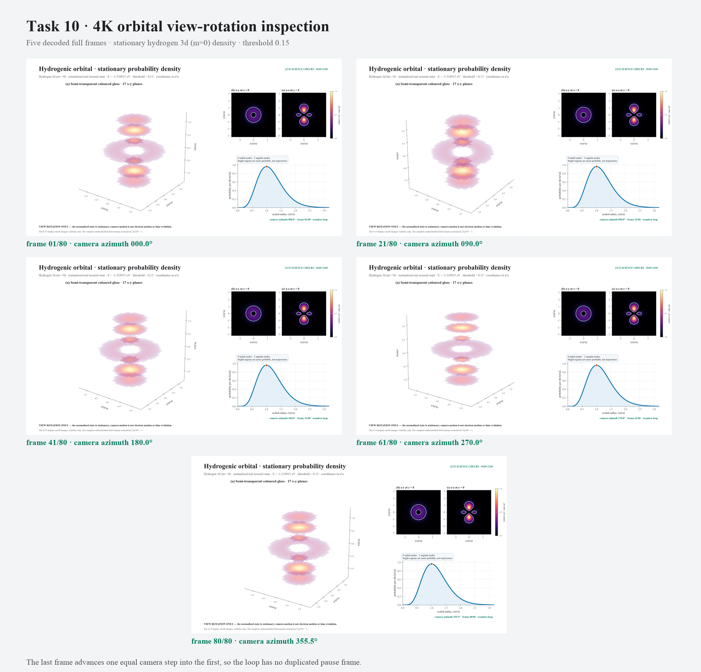

Stationary orbital · view rotation
This is a camera orbit around one normalized hydrogen 3d state. It is not electron motion or time evolution.

Decoded frame inspection
Beginning, quarter-turn, half-turn, three-quarter-turn and final loop frames.
